Rodoslovje
Matične knjige
|
Taufbuch /krstna knjiga Jahr ____ /leto ____ Monat und Tag /mesec in dan der Geburt /rojstvo der Taufe /krst Geburtsort des Täuflings /kraj rojstva krščenca haus No. /hišna št. Namen des Täuflings /ime krščenca Religion /religija katholifch /(katholisch) katoliška ufatholifch /nekatoliška Kefchlecht /spol Knaben /deček Mädchen /deklica Ehelich /zakonski Unehelich /nezakonski Ueltern /starši Name, Zuname und Stand des Vaters /ime, priimek in kraj očeta Name und Familienname der Mutter /ime in dekliško ime matere Pathen /boter Namen und Zunamen /ime in priimek Stand /kraj Die beiftehende hebamme /(bestehende) babica pri porodu Unterfchrift des taufenden Priefters /(Priesters) podpis duhovnika, ki je krstil |
Trauungsbuch /poročna knjiga Anno ____ /leto ____ Monat und Tag /mesec in dan Namen /ime der Gegend und haus No. /naslov in hišna št. des trauenden Priefters /(Priesters) pričujoči duhovnik Bräutigam /ženin Namen /ime Religion /religija Katholifch /katoliška Proteftantifch /protestanska Ulters - Jahre /starost Lebig /samski Mitwer /v zvezi Namen beffen Eltern und ihre Einwilligung /ime njegovih staršev in njihova privolitev Braut /nevesta Namen /ime Religion /religija Katholifch /katoliška Proteftantifch /protestanska Ulters - Jahre /starost Lebig /samska Mitwe /v zvezi Namen berer Eltern und ihre Einwilligung /ime njenih staršev in njihova privolitev Beiftände Namen /ime Stand /kraj Ehe - Lizenz /potrdilo o poroki |
Trauungsbuch /mrliška knjiga Jahr, Monat und Tag /leto, mesec in dan haus Nro. (Gegend) /hišna št. (naslov) Namen des Geftorbenen /(Verstorbenen) ime pokojnika Religion /religija Katholifch /katoliška Proteftantifch /(Prostantisch) protestanska Gefchlecht /(Geschlecht) spol Männlich /moški Weiblich /ženska Ulters - jahre /starost Krankheit und Todesart /bolezen in način smrti |
Sorodstvena razmerja
- stari oče/mati / dedek (/ded)/babica = očetov(a)/mamin(a) oče/mati
- pradedek (/praded)/prababica = dedkov(a)/babičin(a) oče/mati
- bratranec/sestrična = stričev(a)/tetin(a) sin/hči
- mali/mrzli bratranec/sestrična = sin/hči materinega/očetovega bratranca/setrične
- pranečak/pranečakinja = sin/hči nečaka/nečakinje
- bratranec/bratranka = bratov(a) sin/hči
- sestrič/sestrična = sestrin(a) sin/hči
- ôče/áta/ájtek (nar. v.)/áte (nar.)/átej (nar. kor.)/ôča/rodítelj/rodník = moški v odnosu do svojih otrok
- máti/máma/májka (zastar.)/mamán (star.)/rodíteljica/rodníca = ženska v odnosu do svojih otrok
- nečák/nečákinja = bratov(a)/sestrin(a) sin/hči
- zèt/snáha = hčerin/sinova mož/žena
- svák/svákinja, švoger/švagrinja, devér= brat/sestra moža/žene; bratov(a)/sestrin(a) mož/žena; svakinja = žena moževega brata
- tást/tášča = možev(a)/ženin(a) oče/mati
- stríc/têta = očetov(a)/materin(a) brat/sestra
- mala/mrzla stric/teta = očetov(a)/mamin(a) bratranec/sestrična
- prástríc/prátêta, stari/stara stric/teta= očetov(a)/materin(a) stric/teta, dedkov/babičin brat/sestra
- újec/újna (star.) = materin(a) brat/sestra, stric/teta po materini strani
- újna (nar.) = žena materinega brata
- tȇtec = tetin mož
- strína = teta (nar.); stričeva žena (star., nar. prek.)
- bratìč(/brátič)/bratíčna, stríčnik/stríčnica (star.) = bratov(a) sin/hči, nečak/nečakinja (star.); bratranec(/sestrična) (nar.)
- bratàn (star.) = bratov sin, nečak; (bratranec)
- sinôvec = bratov sin, nečak (star.); vnuk po sinovi strani (sinov sin)
- sestrič = sestrin sin, nečak (star.); bratranec (nar. štajersko)
- vnúk = hčerin/sinov sin; (navadno v množini:) daljni potomec
- bratránec = sin strica/tete; bratov/sestrin sin, nečak
- mali/mrzli bratránec = sin očetovega/materinega bratranca/sestrične
- sestránec (star.), strínič (nar.), strnìč (nar.) = bratranec
- bratinec = bratov/sestrin sin, nečak
- bratránka (nar.) = hči strica/tete, sestrična
- pástorek/pástorka = sin/hči iz prejšnjega zakona v odnosu do materinega drugega moža, oz. očetove druge žene
- pra-: pra-sorodnik je enako razmerje kot sorodnik, vendar zamaknjeno za enega prednika nazaj/navzgor; oz. N*pra-sorodnik je tak isti sorodnik [N-2]*pra prednika (tako npr.: )
- mrzli/mali: pri vsakem dodanem mali se generacijska razlika tebe in tega sorodnika ohranja (poimenovanje sorodstvenega razmerja, ki mu dodajaš mali še vedno označuje sorodnika v isti generaciji), skupni prednik pa se z vsakim dodanim mali pomakne eno koleno/vez nazaj/navzgor (bolj daljni prednik). Če imaš torej s sorodnikom, označenim brez dodanih mali skupnega P-prednika (oče-P=1, ded-P=2, praded-P=3, ...), potem imaš z M*malim sorodnikom skupnega [P + M]-prednika (tako npr.: bratranec - skupni prednik je ded/babica → P=2 ⇨ z malim bratrancem → M=1, imaš skupnega P+M-prednika → 3. prednika = pradeda/prababico).
Kolena
Pri "običajnih" kolenih se štejejo povezave, oz. kolikokrat se ta zalomi (primer: z bratrancem si v sorodu v četrtem kolenu, ker si z njim povezan preko starša, starih staršev, tete/strica do bratranca)
Krvno sorodstvo
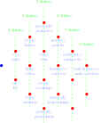
- sorodniki v ravni črti (označena rdeče) so predniki in potomci: starši in otroci - 1. koleno; stari starši in vnuki(nje) - 2. koleno; prastari starši in pravnuki(nje) - 3. koleno; ...
- sorodniki v stranski črti (označene z belo) so vsi ostali krvni sorodniki (izvirajo iz skupnega prednika): bratje in sestre - 2. koleno; tete/strici in nečaki(nje) - 3. koleno; ...
Priženjeno sorodstvo / svaštvo
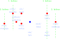
- v svaštvu v ravni črti so: tast/tašča in zet/snaha, očim/mačeha in pastorek/pastorka - 1. koleno
- svaštvo v stranski črti so: svak/svakinja - 2. koleno
Polsorodstvo
Za pomenovanje sorodstvenega razmerja vzamemo razmerje po krvni vezi in dodamo predpono pol (npr. brat ⇨ krvna vez: le en isti starš → polbrat; ali stric ⇨ krvna vez: z mojim očetom ima le enega skupnega starša → polstric). Torej prezreš njegovo polovico, ki ni krvo povezana s teboj in razmerje označiš enako kot za krvnega sorodnika (s dodanim pol).
Osebna imena in priimki
| slovensko ime | nemška ustreznica | latinska ustreznica |
|---|---|---|
| Agata | Agatha | Agatha |
| Aleks | Alexius | |
| Ana | Anna | |
| Andrej | Andreas | |
| Anton | Antonius | |
| Apolonija | Apol(l)onia | |
| Bartolomej | Bartholomäus | |
| Blaž | Blasius | |
| Felicijan | Felicianus | |
| Filip | Philippus | |
| Flor(i)jan | Florianus | |
| FrančiŠek | Franciscus | |
| Gertruda | Gertraud | Gertrudis |
| Gašper | Casparus | |
| Ignacij | Ignatius | |
| Jakob | Jacobus | |
| Janez | Johan/Johann | Joannes |
| Jožef | Joseph/Josef | Josefus |
| Julijan/Julij | Julius | |
| Jurij | Georg | Georgius |
| Lenart | Leonhard | |
| Lovrenc | Laurentius | |
| Luka | Lucas | |
| Marija | Maria | Maria |
| Mark(o) | Marcus | |
| Matevž | Matthaeus | |
| Pavel | Paul | Paulus |
| Primož | Primus (imenovalnik; Primi - rodilnik) | |
| Roza | Rosa | |
| Rupert | Rupertus | |
| Štefan | Stefanus | |
| Teodora | Theodora | |
| Valentin | Valentinus | |
| Vid | Vitus | |
| Vincenc/Vinko | Vincentius | |
| Žiga (Žigmond/Žigon) | Siegmund/Sigismund | |
| Panuatius |
Jeziki
| slovensko ime | staro slovensko ime | nemško | latinsko | latinske okrajšave |
|---|---|---|---|---|
| januar | prosinec | Januar | Januarius/Ianuarius | |
| februar | svečan | Februar (Hornung) | Februarius | |
| marec | sušec | März | Martius | |
| april | mali traven | April | Aprilis | |
| maj | veliki traven | Mai | Maius | |
| junij | rožnik | Juni | Junius | |
| julij | mali srpan | Juli | Julius | |
| avgust | veliki srpan | August | Augustus | |
| september | kimavec | September | September | 7ber, VIIber, 7bri, VIIbri |
| oktober | vinotok | Oktober | October | 8ber, VIIIber, 8bri, VIIIbri |
| november | listopad | November | November | 9ber, 9bri, IXbri |
| december | gruden | Dezember | December | 10ber, Xber, 10bri, Xbri |
Latinščina
- filius/filia= sin/hči
- legitim-us/-a = zakonsk-i/-a
- Die = dan?/dneva?
- (pater) filii = (oče) sina
- (baptizavi) filium = (krstil sem) sina
- (ex) filio = (od) sina
- vidua = vdova
- (filius) viduae = (sin) vdove
- (sepelivi) viduam = (pokopal sem) vdovo
- (ex) vidua = (od) vdove
- pater = oče
- (filius) patris = (sin) od očeta
- (sepelivi) patrem = (pokopal sem) očeta
- (ex) patre = (od) očeta
- legitim-us/-a = zakonsk-i/-a
- rojtvo = nati, natus, genitus, natales, ortus, oriundus
- pogreb/pokop = sepulti, sepultus, humatus, humatio
- krst = baptismi, baptizatus, renatus, plutus, lautus, purgatus, ablutus, lustratio
- cotrok = infans, filius/filia, puer, proles
- smrt = mortuus, defunctus, obitus, denatus, decessus, peritus, mors, mortis, obiit, decessit
- oče = pater
- boter = patrini, levantes, susceptores, compater, commater, matrina
- mož, soprog = maritus, sponsus, conjux, vir
- poroka = matrimonium, copulatio, copulati, conjuncti, intronizati, nupti, sponsati, ligati, mariti
- poročni oklici = banni, proclamationes, denuntiationes
- mati =
- imenovan = nomen
- priimek = cognomen
- starši = parentes, genitores
- žena = uxor, marita, conjux, sponsa, mulier, femina, consors
Zgodovinsko zemljepisje
| država | obdobje priključenosti tej državi | zastava | grb |
|---|---|---|---|
| Republika Slovenija | 25. rožnik (6.) 1991 (razglasitev neodvisnosti) | 
|
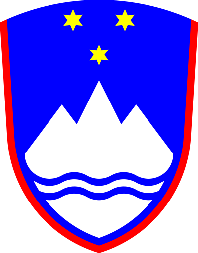 |
| Socialistična federativna republika Jugoslavija: Socialistična republika Slovenija | 7. mali travna 1963 (preimenovanje) - 25. rožnik (6.) 1991 (osamosvojitev); država pa obstaja do 27. malega travna 1992 | 
|
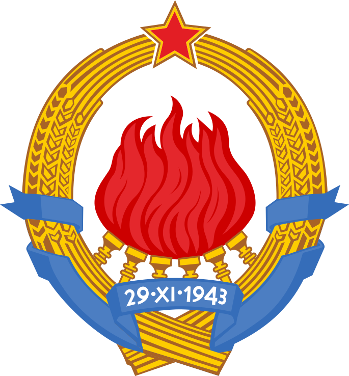 |
| Federativna ljudska republika Jugoslavija | 29. listopad 1945 (preimenovanje) - 7. mali traven 1963 (preimenovanje) | ||
| Demokratična federativna Jugoslavija | 10. veliki srpan 1945 - 29. listopad 1945 (republika in preimenovanje) | ||
| Kraljevina Jugoslavija | 6. prosinec 1929 - 2. svetovna vojna (Slovensko ozemlje je 1941 - 1945 zasedla Nemčija, Italija in Madžarska) | 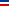 |

|
| Kraljevina Srbov, Hrvatov in Slovencev | 1. gruden 1918 (združitev s Kraljevino Srbijo) - 6. prosinec 1929 (preimenovanje) | ||
| Država Slovencev, Hrvatov in Srbov | 29. vinotok 1918 - 1. gruden 1918 | 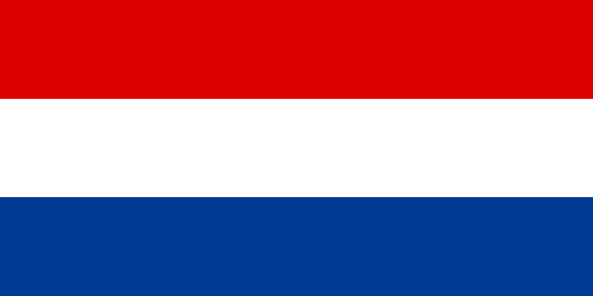 |
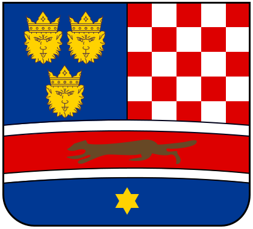 |
| Avstro-Ogrska | 29. veliki traven 1867 (poraz, razpad Nemške zveze) - 11. listopad 1918 (razpad) | 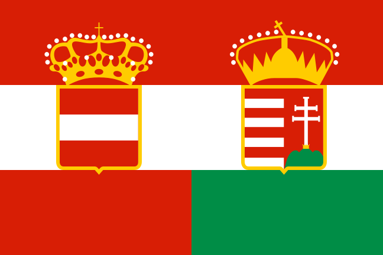 |
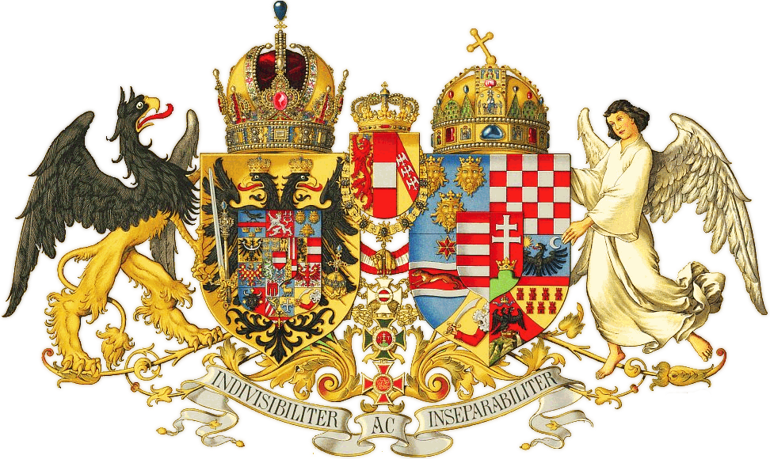 |
| Avstrijsko cesarstvo / Habsburška monarhija | 1814 (na Dunajskem mirovnem zborovanju dobijo Ilirske province) - 1867 (poraz) | 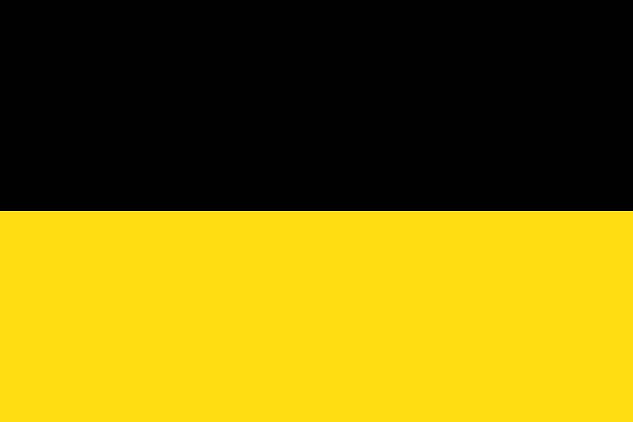 |
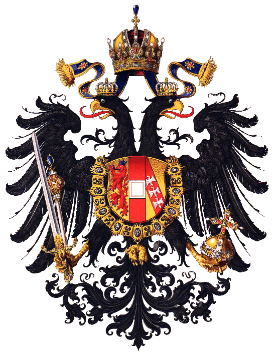 |
| Francosko cesarstvo: Ilirske province | 1809 (ustanovi jih Napoleon po porazu Avstrije) - 1813 (propad Francoskega cesarstva) | 
|
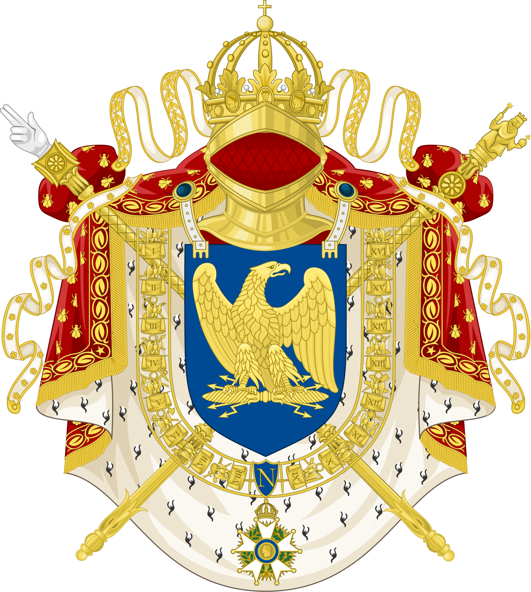 |
| Sveto rimsko cesarstvo | 976 - | 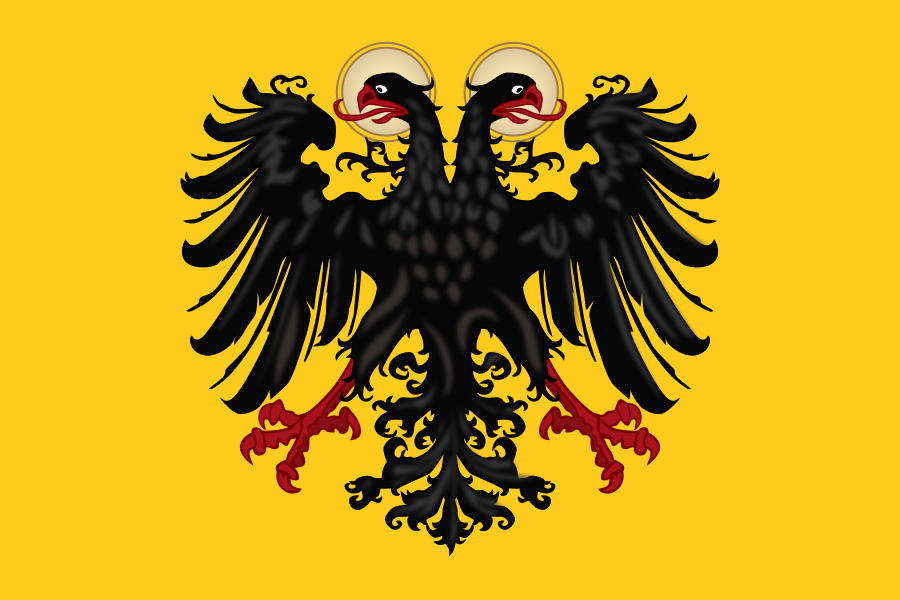 |
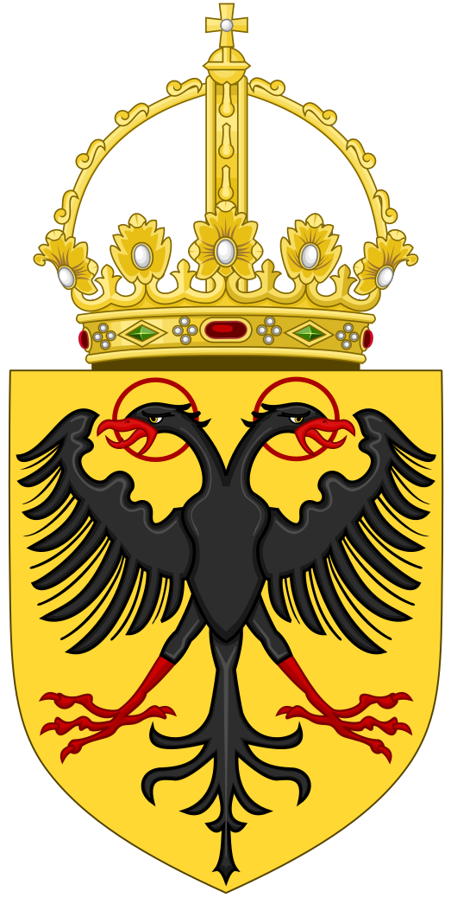 |
| Vzhodnofrankovska država | 843 - 962 | ||
| Frankovsko cesarstvo | 828 - 843 | ||
| Karantanija | 658 (razpad Samove plemenske zveze) - 820/828 (preoblikovanje v mejno grofijo) | ||
| Samova plemenska zveza | 623 (Samov upor proti Avarom) - 658 (Samova smrt) |

Nemška zemljepisna imena na slovenskem narodnem območju
ureditev seznama: dežela - okrajno glavarstvo - okrajno sodišče - občina - naselje
Koroška - Kärnten
Beljak - Villach
Beljak - Villach
Beljak - Villach
- Bekštanj - Finkenstein
- Marija na Zili - Maria Gail
- Vernberg - Wernberg
- Afritz
- Arriach
- Bleiberg
- Einöde
- Feld
- Landskron
- Martin
- Treffen
Podklošter - Arnoldstein
Podklošter - Arnoldstein
- Smerče - Emersdorf
- Staja Ves - Hohenthurn
- Rožek - Rosegg
- Loga Ves - Augsdorf
- Sv. Jakob - Jakob
- Kostanje - Köstenberg
- Rožek - Rosegg
- Vrba - Velden am Wörthersee
- Trbiž - Tarvis
- Lipalja Ves - Leopoldskirchen
- Trbiž - Tarvis
- Vkove - Uggowitz
- Žabnice - Saifnitz/Seifnitz
- Malborgeth
- Pontafel
- Paternion
- Fresach
- Kellerberg
- Mooswald
- Paternion
- Stockenboi
- Weißenstein
Celovec - Klagenfurt
- Borovlje - Ferlach
- Bistrica - Feistritz
Borovlje - Oberferlach
- Madbrovnice - Unterferlach
- Plajberg Slovenski - Windischbleiberg
- Podljubel - Unterloibl
- Sele - Zell
- Svetna Ves - Weizelsdorf
- Vesca - Niederdörfl
- Celovec - Klagenfurt
- Bilčoves - Ludmannsdorf
- Grabštanj - Grafenstein
- Hodiče - Keutschach
- Kotmara Ves - Köttmannsdorf
- Kriva Vrba - Krumpendorf
- Migarje - Mieger
- Otomanje - Ottmanach
- Pokerče - Poggersdorf
- Poreče - Pörtschach am See
- Radiže - Radsberg
- Skofiče - Schiefling am See
- Sv. Martin - Martin am Techselsberg
- Sv. Tomaž - Thomas
- Trdnja Ves - Hörtendorf
- Vesca Vrhnja - Oberdörfl
- Vetrinje - Viktring
- Žihpolje - Maria Rain
- Žrelc - Ebenthal
- Annabichl
- Lendorf
- Maria Saal
- Martin bei Klagenfurt
- Moosburg
- Peter am Bichl
- Peter bei Klagenfurt
- Ponfeld
- Ruprecht bei Klagenfurt
- Tigring
Sv. Mohor - Hermagor
Sv. Mohor - Hermagor
- Brdo - Egg
- Dropole - Tröppolach
- Goriče - Görtschach
- Mičice - Mitschig
- Moše - Möschach
- Radnja Ves - Rattendorf
- Sv. Lovrenc - Lorenzen im Gitschthale
- Sv. Mohor - Hermagor
- Sv. Steben na Zili - Stefan an der Gail
- Guggenberg
- Birnbaum
- Cirkno - Kirchbach
- Dole - Dellach
- Kotje - Kötschach
- Muta - Mauthen
- Riže - Reisach
- Sv. Lovrenc v Lošu - Lorenzen im Lessachthale
- Železje v Lošu - Liesing
- Birnbaum
- Jakob im Lessachthale
- Luggau
- Würmlach
Velikovec - Völkermarkt
- Doberla Ves - Eberndorf
- Doberla Ves - Eberndorf
- Galicija - Gallizien
- Globasnica - Globasnitz
- Rikarja Ves - Rückersdorf
- Škocijan - Kanzian
- Žitara Ves - Sittersdorf
- Kapla Železna - Eisenkappel
- Bjela - Vellach
- Jezersko - Seeland
- Kapla Železna - Eisenkappel
Pliberk - Bleiburg
- Blato - Moos
- Črna na Koroškem- Schwarzenbach
- Kotle - Köttelach
- Ljibeliče/Libeliče - Leifling
- Ljibuče - Loibach
- Mižica - Mieß
- Pliberk - Bleiburg
- Prevalje - Prävali
- Ravne na Koroškem / Guštanj - Gutenstein
- Sv. Danijel - Daniel ob Bleiburg
- Švabek - Schwabegg
- Tolsti Vrh - Fettengupf
Celovec - Klagenfurt
- Djekše - Diex
- Grebinj - Griffen
- Prustrica - Prustritz
- Ruda - Ruden
- Sv. Peter pri Važinjah - Peter am Wallersberg
- Tinje - Tainach
- Važenberg - Waisenberg
- Velikovec - Völkermarkt
Spittal
- Gmünd
- Gmünd
- Kremsbrücke
- Malta
- Puchreit
- Rennweg
- Trebesing
- Greifenberg
- Berg
- Bruggen
- Flaschberg
- Greifenburg
- Irschen
- Oberdrauburg
- Steinfeld
- Techedorf
- Weißbriach
- Leskovec pri Šentrupertu - Lassendorf
- Megomia - Micheldorf
- Peterle - St. Peter
- Ponudba - Ramingstein
- Sv. Ulrik - St. Ulrich
- Podjuna - Pöckstein
- Sebeče - Seeboden
- Šenik - Millstatt
- Černica - Tschiernock
- Černica - Tschiernock
- Černeče - Tschierneck
- Črneče - Tscherniach

Zunanje povezave in viri
- Slovensko rodoslovno društvo
- mag. Janez Toplišek: Slovensko rodoslovje
- Facebook - Slovenian Genealogy (Genealogy2000)
Orodja za družinska drevesa
Brez povezave
DNK
- Ancestry - DNA
- My True Ancestry
- 23andMe
- GEDmatch
- Slovensko rodoslovno društvo: Matične knjige
- Nadškofija Maribor - Nadškofijski arhiv: Matične knjige
- Zgodovina.si: Matične knjige
- Slovensko rodoslovno društvo - Indeksi
- Matricula Online: Arhivski fondi
- PriRod (dr. Uroš Ocepek)
- PriRod - Scriptis (izpis besedila v starih pisavah)
- PriRod - Lokalis (imena krajev z zgodovinskimi imeni ter njihova zgodovinska upravna umestitev leta 1900)
- PriRod - Nomen (pregled pojavljanja priimkov v rodoslovnih virih)
- Igor Filipič: Vodnik po matičnem gradivu in zapisnikih duš v Nadškofijskem arhivu Maribor (pdf)
- Billion Graves
- Find a Grave
- Geneanet - Cemetry
- Geneanet - Cemetry: Slovenia (seznam popisanih slovenskih pokopališč)
- WikiTree: Cemetries (projekt zemljevida pokopališč po svetu)
- Slovenski grobovi (znani Slovenci)
- I-Pokopališče - Iskalnik grobov (21 slovenskih občin)
- Iskalnik grobov Žale (širša okolica Ljubljane: Žale, Šentvid, Vič, Štepanja vas, Bizovik, Sostro, Polje, Stožice, Dravlje, Rudnik, Šmartno pod Šmarno goro, Črnuče, Šentjakob, Janče, Prežganje, Javor, Mali Lipoglav, Šentpavel, Navlje)
- Iskalnik pokojnikov Maribor (območje Maribora)
- Pokopališča.si (Grosuplje: Mestno pok. Resje Grosuplje, Pok. Šmarje - Sap, Pok. Št. Jurij; Ivančna Gorica: Pok. Ivančna Gorica)
- Pokopališča.si (Koper, Piran)
- Franc Jakopin: Kdo so bili udje Mohorjeve družbe v letih 1868-1877 (pdf; besedje, ki določa poklic, stan ali položaj)
- Leksikon priimkov
- Slovenska hišna imena
- Slovenska hišna imena: Knjižnice (knjižne izdaje za posamezna območja)
- You Tube - Igor Gošte: Sledi korakov: Tino Mamić o priimkih in rodoslovju
- Leemeta: Izvor priimkov
- FEEFHS: Slovenian Given Names
- Geodetska uprava RS: Dediščina katastrov na Slovenskem (pdf) [arhivirano]
- Wikipedija: Seznam nemških imen krajev v Sloveniji
- Wikipedija: Zgodovina Slovenije
- Wikipedija: Slovenija
- Wikipedija: Socialistična federativna republika Jugoslavija
- Wikipedija: Federativna ljudska republika Jugoslavija
- Wikipedija: Demokratična federativna Jugoslavija
- Wikipedija: Kraljevina Jugoslavija
- Wikipedija: Kraljevina Srbov, Hrvatov in Slovencev
- Wikipedija: Država Slovencev, Hrvatov in Srbov
- Wikipedija: Avstro-Ogrska
- Wikipedija: Avstrijsko cesarstvo
- Wikipedija: Ilirske province
- Wikipedija: Prvo Francosko cesarstvo
- Wikipedija: Sveto rimsko cesarstvo
- Wikipedija: Vzhodnofrankovska država
- Wikipedija: Frankovsko cesarstvo
- Wikipedija: Karantanija
- Legacy Tree: Mapire - A Free Tool for Historical Maps of Europe
- FEEFHS: Slovenian vs. Austrian Place Name Gazetteer
- SiStory - Zgodovina Slovenije: Popisi
- Arcanum: Europe in the XVIII. century
- Arcanum: Europe in the XIX. century
- Arcanum: Europe in the XIX. century (with the Third Military Survey)
- Arcanum: Habsburg Empire - Cadastral maps (XIX. century)
- Arcanum: Illyria (1829–1835) - Second military survey of the Habsburg Empire
- Slovenska ledinska imena
- Geopedia - Historical maps
- Hišne številke in hišna imena (Google Earth; moj lasten projekt)
- Vodice 1828 (Google zemljevidi; stare hišne številke)
- Slovensko rodoslovno društvo: Rodoslovni slovar
- GenWiki: Kategorie: Krankheitsbezeichnung, Medizinischer Begriff (imena bolezni in medicinski izrazi v nemščini)
- Familia Austria: Wiener Krankheiten - Lexikon (imena bolezni in medicinski izrazi v nemščini)
- Latin Dictionary
- Latin is Simple
- Family Search: Latin Genealogical Word List
- CompGen (nemško Združenje za računalniško rodoslovje)
- SIStory (Zgodovina Slovenije)
- SIStory (Zgodovina Slovenije) - Vojaške žrtve 1. svetovne vojne na Slovenskem
- Virtualna arhivska čitalnica (Slovenske javne arhivske službe)
- Digitalna knjižnica Slovenije (dlib)
- Kamra - digitalizirana kulturna dediščina slovenskih pokrajin
- Dlib: Gradivo za historično topografijo predjožefinskih župnij na Slovenskem : Kranjska
- Birth and Baptismal Record for Brygida Milewska Daughter of Franciszek Milewski and Konstancja Milewska (pdf; prepis zapisa v latinščini in prevod v angleščino)
- YouTube - Transkribus: 11 Cadastre maps with Transkribus - Transkribus User Conference 02/2020